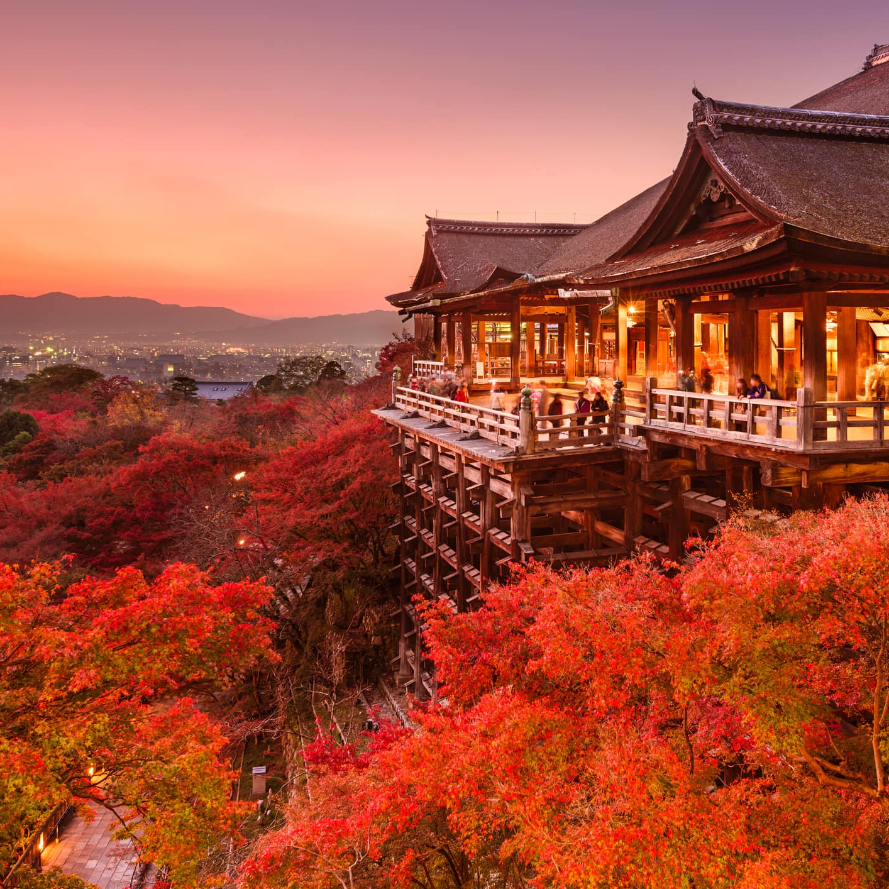
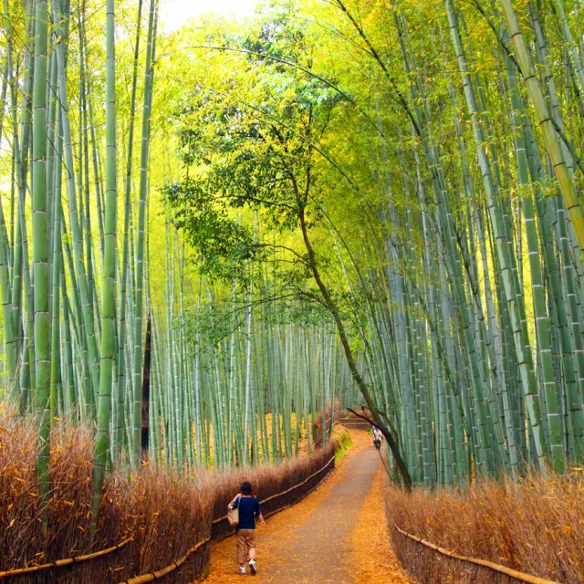

KIYOMIZU-DERA
The temple was established in 778,
during the late, by Enchin Shonin, who
was a priest from Nara (the capital of
Japan from 710 to 784)...
read more

Arashiyama
Bamboo Grove
The Sagano Bamboo Forest is situated
northwest of Kyoto in Japan near the
Tenryū-ji temple...
read more